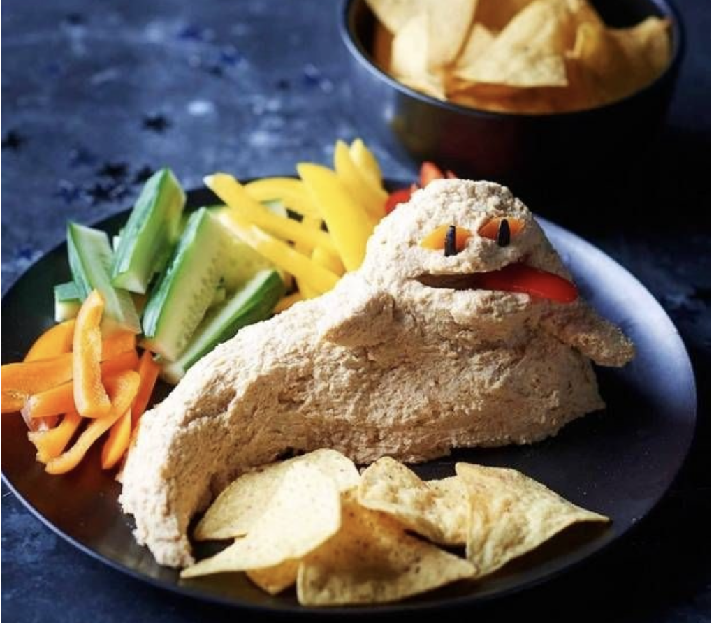

- 1 15oz can chickpeas
- 1/4 cup lemon juice
- 1/4 cup tahini
- 1 garlic clove minced
- 2 tbsp extra virgin olive oil
- 1/2 tsp ground cumin
- 2 to 3 tbsp water
- salt to taste
- dash ground paprika
- In the bowl of a food processor, combine the tahini and lemon juice and process for 1 minute, scrape the sides and bottom of the bowl then process for 30 seconds more.
- Add the olive oil, minced garlic, cumin, and a 1/2 teaspoon of salt to the whipped tahini and lemon juice. Process for 30 seconds, scrape the sides and bottom of the bowl then process another 30 seconds or until well blended. Open, drain, and rinse the chickpeas. Add half of the chickpeas to the food processor and process for 1 minute. Scrape sides and bottom of the bowl, then add remaining chickpeas and process until thick and quite smooth; 1 to 2 minutes.
- Most likely the hummus will be too thick or still have tiny bits of chickpea. To fix this, with the food processor turned on, slowly add 2 to 3 tablespoons of water until you reach the perfect consistency.
- Shape that thang into Jabba The Hummus
Return home